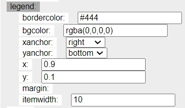
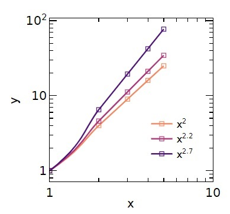

Create a csv or excel file with example data like the following.
Now click on the Choose File button (alternatively drag and drop your file onto the button). The data will be plotted and should look like this:

Under the Layout section, click on xaxis the title. You should see this:

You can click on xaxis again to collapse the section. Repeat for the y axis.
The legend is automatically shown, it can be toggled on/off with the Showlegend checkbox. Each data series is shown under the Data section on the right of the page. For now we just have the y series. Lets rename to

Lets show each datapoint and keep the line for this dataseries. Under Data, mode select the lines+markers from the dropdown.

Lets make this a rectangle. Under the Layout section, change the margins for the bottom, left, right and top and the total width and height of the plot as shown below:

Update the line style and the marker styles under the Data section as shown below:

The plot should look like this:

You can save this plotting style as a template by clicking on the Save Template button. The template is saved by your browser. Refresh the page and reupload the data to the Choose File button. Under Choose Template click on the template you just saved. Your plot should go from the default formatting to include the styles we just set up.
Create a csv or excel file with multiple data series formatted like such:

Or if they all share the same x data:

Upload this file as before. The default plot should look like this:

The data series styles can be adjusted individually as shown above. Alternatively, they can all be updated at the same time with the Master Trace style. Here is an example and resulting plot:


Just above the Layout button, the color scheme can be changed and the colors for each series are changed in accordance with their matching color in the color scheme. For example lets use the tab20 scheme.

It will look like this

We can choose a sequential color scheme (the number of colors within the sequence is set by n_colors). Try Viridis, Magma, Plasma, etc. I will set as Magma_r_ (reverse magma).
Lets make this a log-log scale. We can do this by setting type to log for both xaxis and yaxis. As shown below I set the range from (0,1); note these are on the log scale.
To only show the ticks every order of 1. Set dtick to 1 (again, this is logscale).
The legend can be moved with the x and y under the Layout, legend.

If you made all the changes noted above, the plot should look like this:

Within the plot region. Click on the button for either exporting as SVG or PNG:

SVG formatting is useful if you open in Inkscape to do any final formatting. PNG is useful for placing directly into a document. Note the PNG is upscaled 8 times to improve resolution; the actual size in pixels is the width and height set in the Layout section.